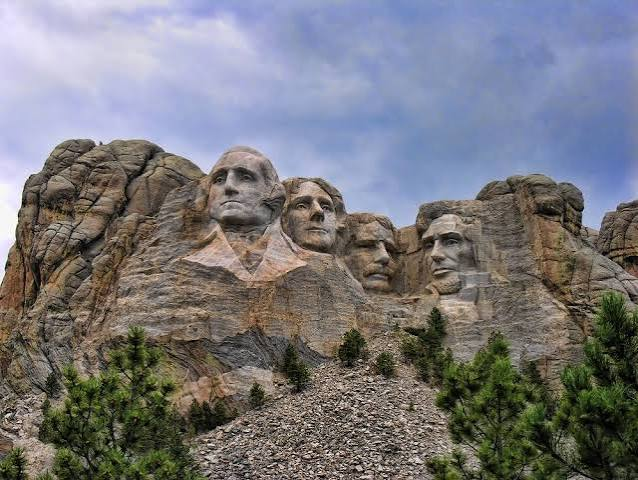

South Dakota, deutsch Süddakota[2], ist einer der nordwestlichen Prärie-Bundesstaaten der Vereinigten Staaten. Er umfasst 199.731 km². Im Westen befinden sich die Black Hills, östlich davon die Badlands und im Osten des Staates das Coteau des Prairies. Die größte Stadt ist Sioux Falls, die Hauptstadt ist Pierre. South Dakota beheimatet mehrere Indianerreservate, insbesondere der Lakota. Der Staat hat innerhalb der USA nach Alaska und New Mexico den dritthöchsten Bevölkerungsanteil von Indianern.[3]
Quellen- und Lizenzhinweis:
Dieser Text basiert auf dem Wikipedia-Artikel
South Dakota
(geänderte Fassung) und steht unter der Lizenz
Creative Commons Attribution-ShareAlike 4.0 International (CC BY-SA 4.0).
Das Bild ist von
USA Tipps